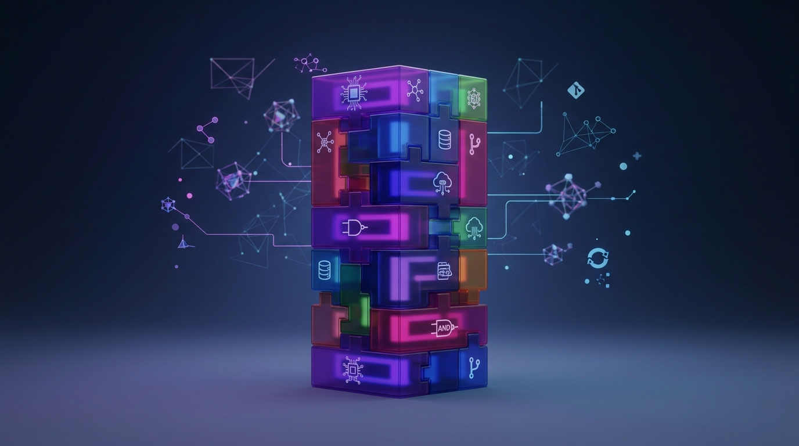
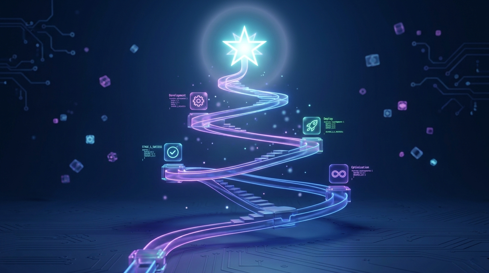
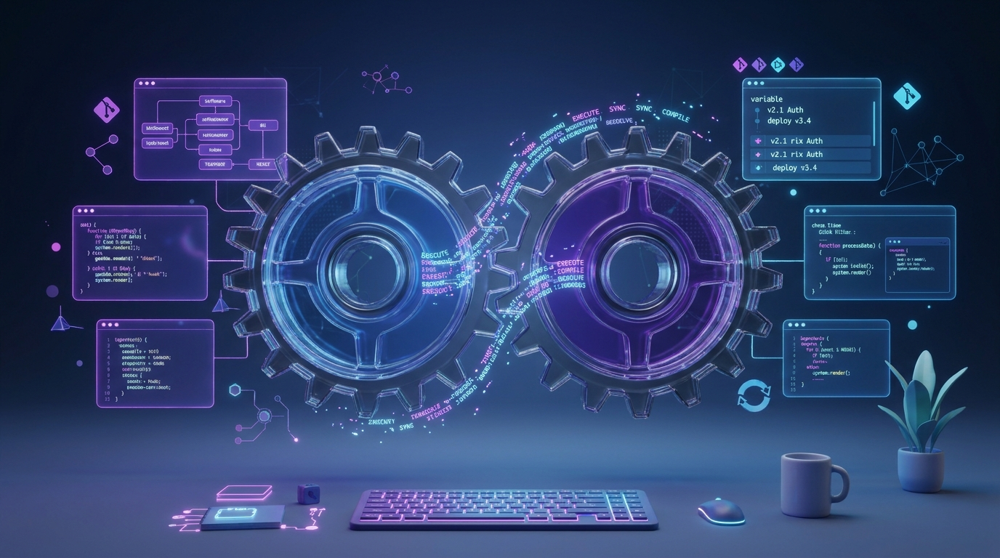
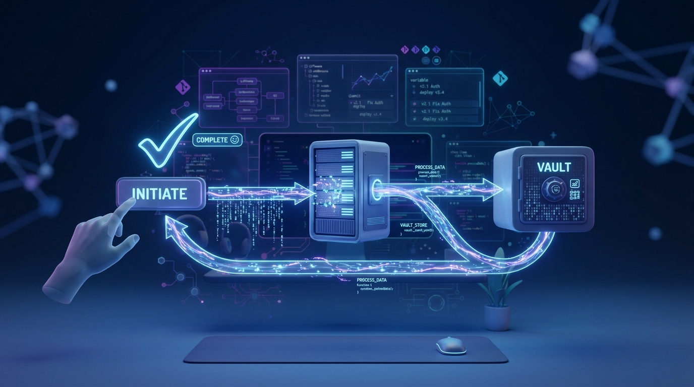
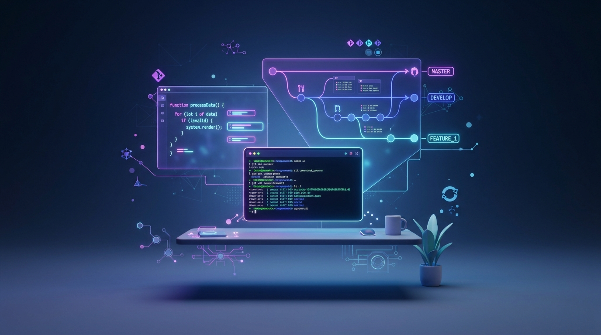
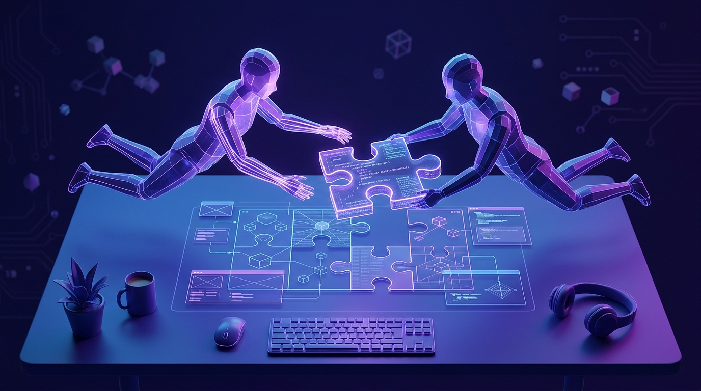
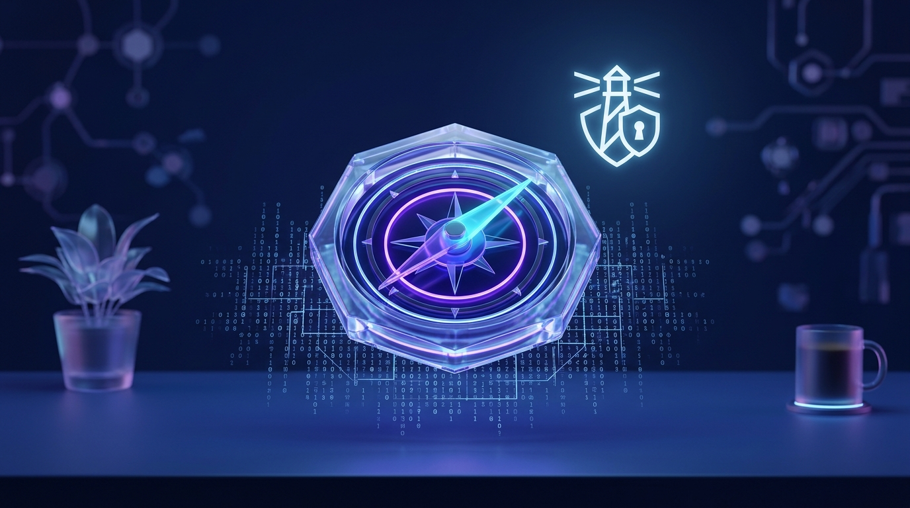

LAMP Stack: Linux + Apache + MySQL + PHP (A fundação clássica tradicional).
Vantagem: Facilita a contratação e padroniza a arquitetura dos projetos no mercado.

Jornada de Aprendizado do Iniciante
Fase 1: Domine a lógica de programação e a base da Web (HTML/CSS/JS).
Fase 2: Domine o Node.js (JavaScript) para o Back-End e aprenda Git/GitHub (Controle de versão).
Fase 3: Compreenda modelagem de bancos de dados relacionais (PostgreSQL).
A Regra de Ouro: Construa projetos reais e práticos. A teoria faz sentido quando você cria algo do zero.

Por Onde Começar Hoje?
O Conceito Chave: Ser Full Stack não significa saber tudo com perfeição, mas sim entender como as engrenagens se conectam de ponta a ponta.
O Perfil do Mercado: As empresas valorizam profissionais versáteis, que conseguem transitar pelas duas áreas e resolver problemas de forma independente.

As Engrenagens na Prática: O Fluxo Total
O Clique do Usuário: O cliente clica em "Comprar" no Front-End.
A Viagem dos Dados: A API encapsula a requisição HTTP (ex: ID do produto e usuário) e envia para o Back-End.
A Validação e Registro: O Back-End verifica o estoque, processa o pagamento e salva a venda no Banco de Dados.
O Retorno de Sucesso: O banco confirma a gravação, o Back-End responde com sucesso e o Front-End exibe "Compra realizada!".

Ferramentas Indispensáveis do Desenvolvedor
Editor de Código (IDE): O padrão de mercado hoje é o VS Code.
Navegador (DevTools): Chrome ou Firefox para inspecionar e testar o código em tempo real.
Git e GitHub: Controle de versão para salvar o histórico e trabalhar em equipe.
Terminal: Interface de texto para executar scripts, gerenciar servidores e instalar pacotes.

Mitos vs. Realidade no Mercado
Mito 1: "Precisa ser um gênio em matemática."
Realidade: Você precisa de lógica, resolução de problemas e organização.
Mito 2: "Você precisa decorar todas as linhas de código."
Realidade: Desenvolvedores usam Google, documentações e IA todos os dias. Saber pesquisar é habilidade técnica.
Mito 3: "O mercado está saturado para juniores."
Realidade: Faltam profissionais que entendem a integração de ponta a ponta (Full Stack).
Desafio Prático de Fixação (15 Minutos)
Objetivo: Mapear um sistema que vocês usam no dia a dia (ex: Instagram, Netflix ou Uber).
Em Duplas ou Trio:
1. Desenhem a interface (Front-End).
2. Listem 3 regras de negócio nos bastidores (Back-End).
3. Identifiquem 2 informações vitais para salvar (Banco de Dados).
Compartilhamento: Duas equipes vão apresentar a sua lógica para a sala.

Dicas para Sobreviver ao Início da Jornada
Evite o "Tutorial Hell": Não fique só assistindo vídeos. Digite o código, erre e tente corrigir.
Foco em uma Linha: Não tente aprender React, Python, Java e PHP ao mesmo tempo. Escolha uma base sólida primeiro.
Comunidade é Tudo: Participe de fóruns, Discord e eventos locais. Compartilhar dúvidas acelera o aprendizado.

Obrigado e Bons Estudos!
A sua jornada no desenvolvimento de ponta a ponta começou.